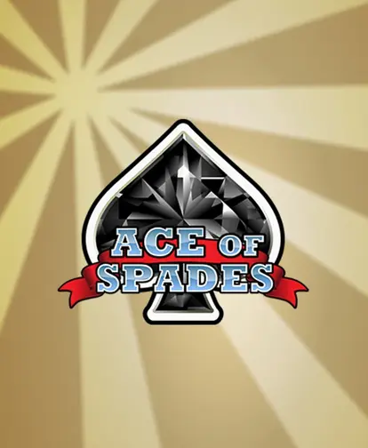
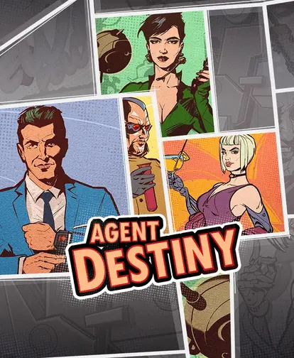
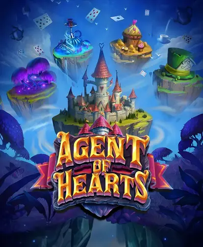
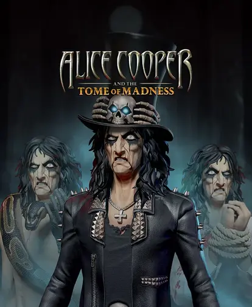
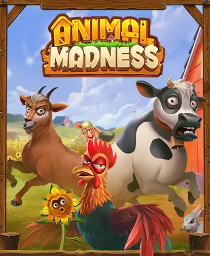
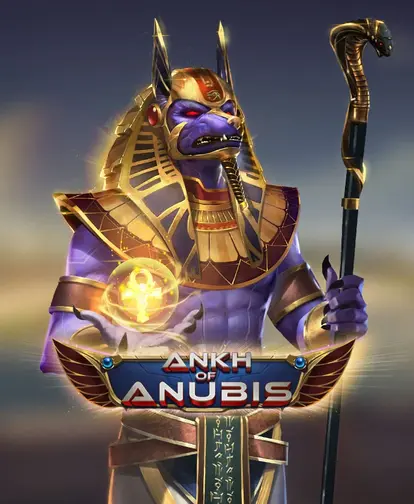

Ace of Spades
A crisp card classic that rewards observation, musical timing, and calm focus.
Playful optimism for adults who prefer artful, zero-cost adventures
LuckyFortuneRealm.com is a bright corner of the internet dedicated to imaginative, credit-only browser play. We pair a deep-blue palette with warm orange accents to keep energy high while reminding every visitor that the stakes stay virtual, calm, and adult-friendly.
Fresh editor notes greet you on the homepage with mood playlists, hydration reminders, and curated difficulty levels.
Every interaction feels smooth on phones, tablets, and desktops thanks to our mobile-first build process.
We reiterate on every page that credits have no cash value, accounts are 18+, and privacy controls are simple.

A crisp card classic that rewards observation, musical timing, and calm focus.

A vintage spy thriller with comic panels that merge into dynamic reels.

A whimsical mission through card kingdoms with rotating agents and emotional story beats.

A theatrical rock horror collaboration packed with portals, riffs, and lore entries.

Farmyard chaos with charming animations, crop boosters, and cozy tempo controls.

A sci-fi desert odyssey where guardian drones unlock cascading cosmic paths.
Our collective includes narrative designers, wellness coaches, and QA testers who believe cheerful aesthetics and compliance can coexist. We document every moderation policy in plain language so you can relax.
Meet the teamNeed a five-minute mood lifter or a thirty-minute focus sprint? Describe it and we will send back a personalized set of games, all free-to-play.
Start the convo